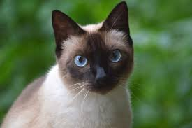

The Thai cat is the predecessor of the Siamese cat that originated from Thailand and is the origional version of the Siamese cat. Its kind of the origional cat before it became a Siamese cat. They are pretty much the same with some minor differences including the shape of the head, with Thai having a rounder head compare to the sharper angles of the Siamese cats.
